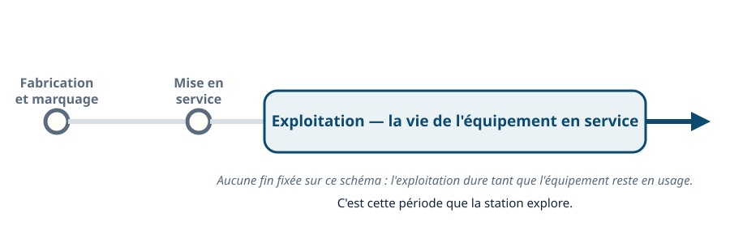
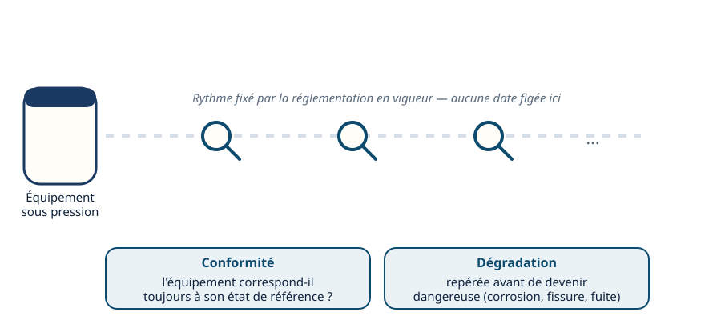
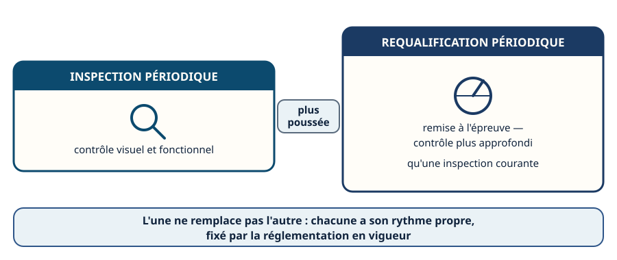
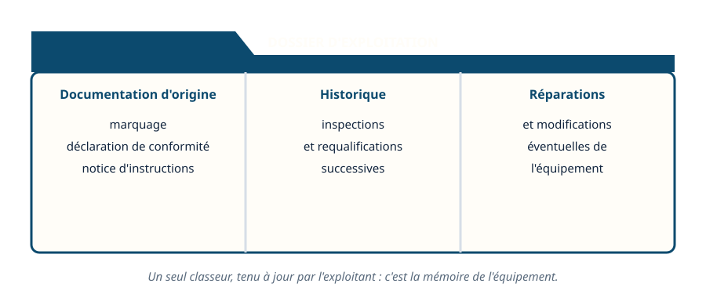
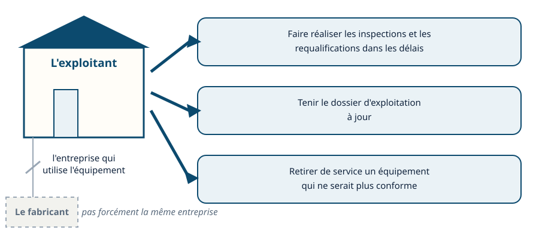
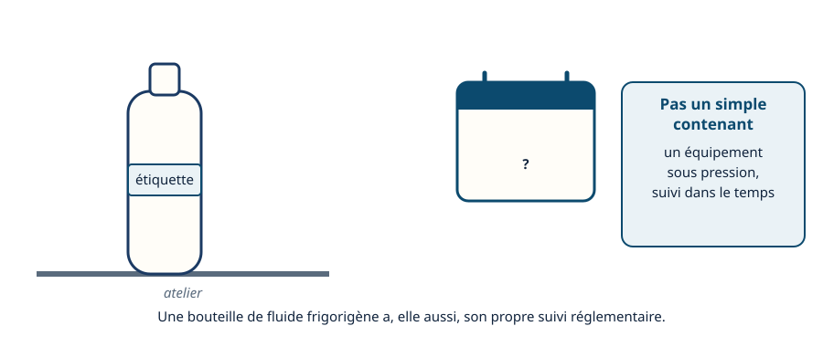
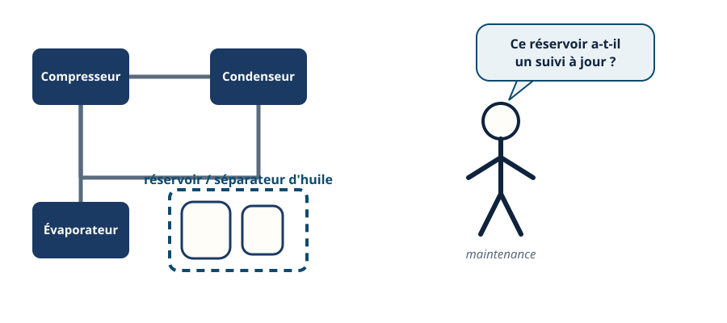
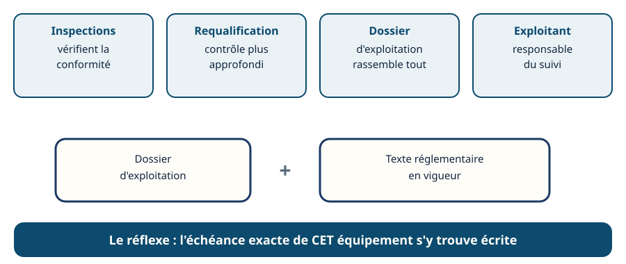

La DESP · niveau BTS
En service — la vie de l'équipement après l'installation
Mini-station commentée · 8 écrans et 4 questions · environ 10 minutes
À la fin de la station, vous savez qu'un équipement sous pression reste suivi tout au long de sa vie : inspections périodiques, requalification, dossier d'exploitation tenu à jour — et vous savez qui, de l'exploitant ou du fabricant, en est responsable.
Chaque écran peut être expliqué à voix haute : le bouton « Écouter » commente ce que vous voyez. Rien n'est dit qui ne soit aussi écrit.
Écran 1 sur 8
Après l'installation, une autre vie commence
La directive DESP encadre l'équipement dès sa fabrication : marquage, déclaration de conformité, notice d'instructions. Mais son rôle ne s'arrête pas là. Une fois l'équipement installé et mis en service, il entre dans une période longue — l'exploitation — pendant laquelle il reste suivi.
Cette station regarde cette période : ce qui doit être vérifié pendant que l'équipement fonctionne, et qui en est responsable.

Écran 2 sur 8
Les inspections périodiques : vérifier que rien n'a bougé
Tout au long de la vie de l'équipement, des inspections périodiques ont lieu. Leur rythme est fixé par la réglementation en vigueur — à vérifier sur le texte applicable à l'équipement concerné, jamais au jugé.
Ce qu'elles cherchent :
- que l'équipement reste conforme à son état de référence ;
- qu'une dégradation — corrosion, fissure, fuite naissante — soit repérée avant de devenir dangereuse.

Écran 3 sur 8
La requalification périodique : un contrôle plus profond
À un rythme lui aussi fixé par la réglementation en vigueur, l'équipement subit une requalification périodique : une remise à l'épreuve, plus approfondie qu'une inspection courante.
L'inspection et la requalification ne se remplacent pas : elles se complètent, chacune à son rythme propre — à vérifier, là encore, sur le texte applicable à l'équipement concerné.

Écran 4 sur 8
Le dossier d'exploitation : la mémoire de l'équipement
L'exploitant tient à jour un dossier d'exploitation qui rassemble :
- la documentation d'origine : marquage, déclaration de conformité, notice d'instructions ;
- l'historique des inspections et des requalifications ;
- les réparations ou modifications éventuelles.
Ce dossier est la mémoire de l'équipement : c'est lui qu'on consulte pour savoir où il en est, et ce qu'il reste à faire.

Écran 5 sur 8
Qui doit s'en occuper : l'exploitant
C'est l'exploitant — l'entreprise qui utilise l'équipement, pas forcément celle qui l'a fabriqué — qui doit :
- faire réaliser les inspections et les requalifications dans les délais ;
- tenir le dossier d'exploitation à jour ;
- retirer de service un équipement qui ne serait plus conforme.

Écran 6 sur 8
Sur le terrain : la bouteille qui vieillit en atelier
Une bouteille de fluide frigorigène qui reste plusieurs années en atelier n'est pas un simple contenant : c'est un équipement sous pression, avec son propre suivi dans le temps.
Le frigoriste qui la manipule en routine doit garder ce réflexe : elle aussi peut avoir un dossier, elle aussi peut être concernée par une inspection ou une requalification.

Écran 7 sur 8
Sur le terrain : le réservoir en service depuis des années
Un réservoir ou un séparateur d'huile installé sur une installation frigorifique en fonctionnement depuis des années reste, lui aussi, un équipement sous pression suivi dans le temps.
Un frigoriste qui intervient en maintenance sur une installation ancienne doit savoir que ces équipements ont un suivi réglementaire dans la durée, pas seulement au moment de leur pose.

Écran 8 sur 8
Bilan et le réflexe
- Des inspections périodiques vérifient la conformité et repèrent une dégradation avant qu'elle devienne dangereuse.
- La requalification périodique est un contrôle plus profond, à un rythme propre.
- Le dossier d'exploitation rassemble la documentation d'origine, l'historique des contrôles et les réparations.
- C'est l'exploitant, pas forcément le fabricant, qui doit tout suivre — et retirer de service si besoin.
Le réflexe : consulter le dossier d'exploitation et le texte réglementaire en vigueur pour connaître l'échéance exacte de l'équipement concerné.

Question 1 sur 4
Une requalification, qu'est-ce qui la distingue d'une inspection ?
Question 2 sur 4
Qui doit faire réaliser les contrôles et tenir le dossier à jour ?
Question 3 sur 4
La périodicité des inspections et requalifications est…
Question 4 sur 4
Un réservoir en service depuis des années : que garder à l'esprit ?
Les correspondances de la station
- NF EN 378 (même sous-ligne, en préparation) — le suivi en service croise aussi les contrôles propres au circuit frigorifique que fixe cette norme.
Cette station est en préparation sur le plan du réseau.